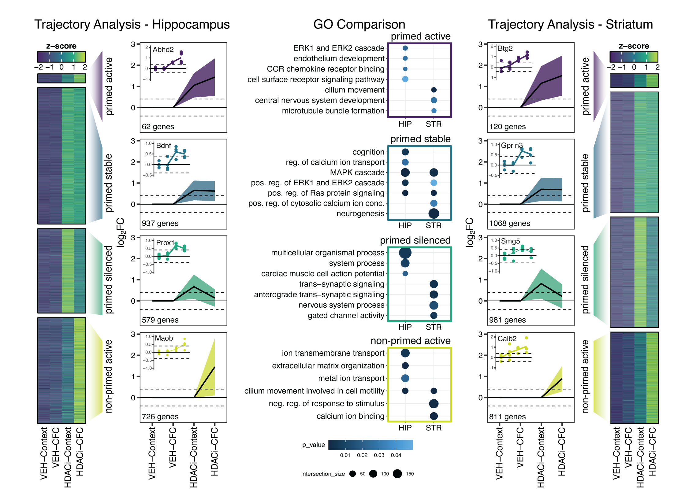

The HDAC inhibitor CI-994 acts as a molecular memory aid by facilitating synaptic and intracellular communication after learning
Allison M. Burns, Mélissa Farinelli-Scharly, Sandrine Hugues-Ascery, Jose Vicente Sanchez-Mut, Giulia Santoni, Johannes Gräff
 Long-term memory formation relies on synaptic plasticity, neuronal activity-dependent gene transcription, and epigenetic modifications. Multiple studies have shown that HDAC inhibitor (HDACi) treatments can enhance individual aspects of these processes and thereby act as putative cognitive enhancers. However, their mode of action is not fully understood. In particular, it is unclear how systemic application of HDACis, which are devoid of substrate specificity, can target pathways that promote memory formation. In this study, we explore the electrophysiological, transcriptional, and epigenetic responses that are induced by CI-994, a class I HDACi, combined with contextual fear conditioning (CFC) in mice. We show that CI-994–mediated improvement of memory formation is accompanied by enhanced long-term potentiation in the hippocampus, a brain region recruited by CFC, but not in the striatum, a brain region not primarily implicated in fear learning. Furthermore, using a combination of bulk and single-cell RNA-sequencing, we find that, when paired with CFC, HDACi treatment engages synaptic plasticity-promoting gene expression more strongly in the hippocampus, specifically in the dentate gyrus (DG). Finally, using chromatin immunoprecipitation-sequencing (ChIP-seq) of DG neurons, we show that the combined action of HDACi application and conditioning is required to elicit enhancer histone acetylation in pathways that underlie improved memory performance. Together, these results indicate that systemic HDACi administration amplifies brain region-specific processes that are naturally induced by learning.
- Posted on:
- May 22, 2022
- Length:
- 2 minute read, 219 words
- Categories:
- epigenetic priming fear learning HDACi NGS synaptic plasticity
- See Also: